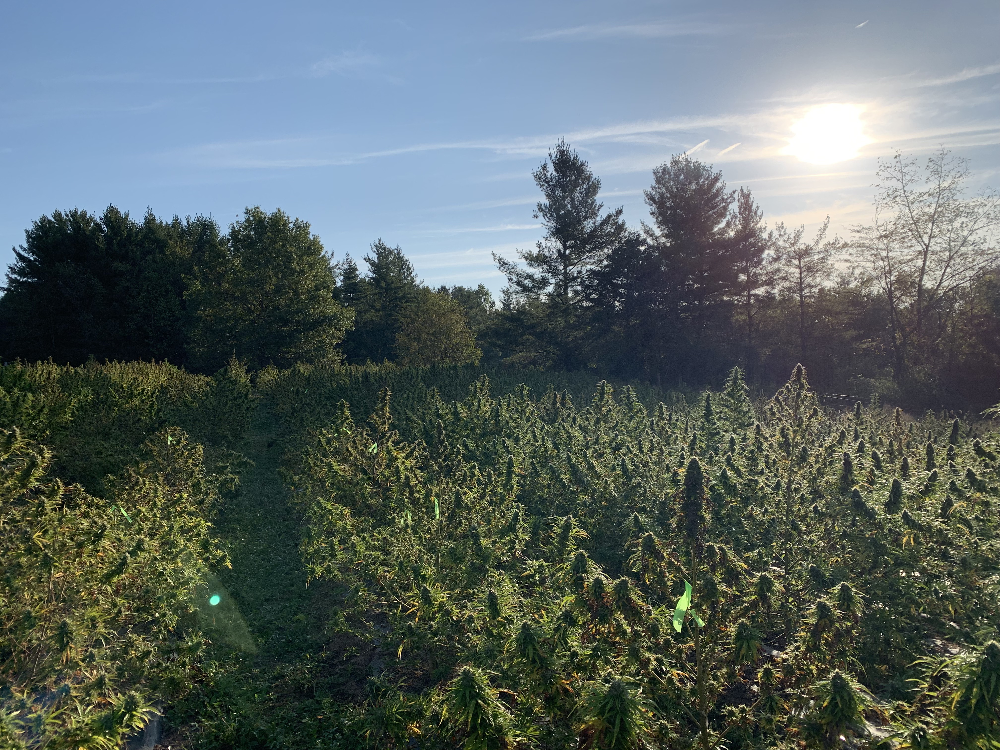

CBD Education
Full Spectrum vs Broad Spectrum vs CBD Isolate Explained
You're standing in a store, or scrolling through yet another website, and there they are. Three terms on three different bottles...

Stories, science, and updates from Fiddlers Green Farm
You're standing in a store, or scrolling through yet another website, and there they are. Three terms on three different bottles...

The single most common question we hear — at the farmers market, in emails, even from friends at dinner...

"Regenerative" is everywhere right now. Everybody's using the word. Most of them can't tell you what it actually means.